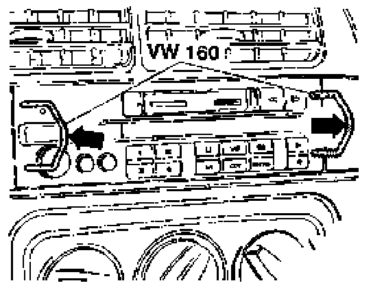

Radio System (Deluxe, Premium), Removing and Installing
Radio (Deluxe and Premium), removing and installing
CAUTION! Before working on the electrical system:
- Obtain radio anti-theft code.
- Disconnect battery Ground (GND) strap.
Removing
- Insert VW 160 radio removal clips into radio shown.

- Spread clips outward -arrows- and pull until radio slides from instrument panel.
- Remove connectors and antenna cable and remove radio.
Installing
- Remove VW 160 radio removal clips from radio.
- Install all radio connectors.
- Install antenna cable and secure to radio.
- Slide radio into instrument cluster (rubber bushing on rear of radio must contact stop and radio must lock into place).
Notes: Do not pinch or damage wires when installing radio.
After reconnecting battery:
- Activate vehicle vehicle equipment such as radio, clock and power window.
- On vehicles equipped with OBD II, activate readiness code.